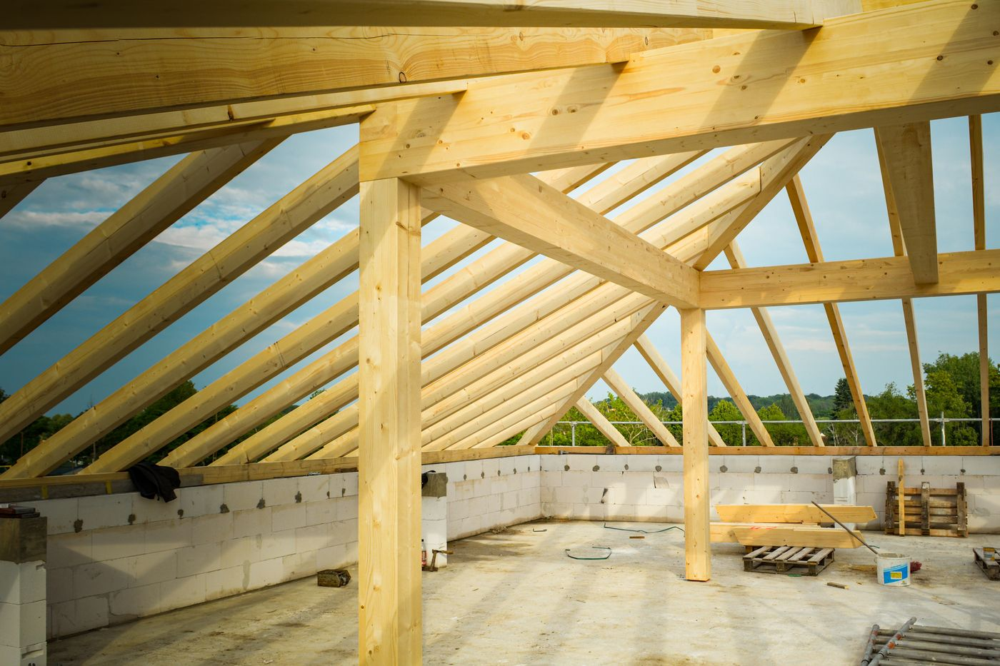
Więźby dachowe
Komplet elementów więźby według projektu dachu: krokwie, płatwie, murłaty, słupy, kleszcze. Docięte na długość, gotowe do postawienia.
Zapytaj o więźbę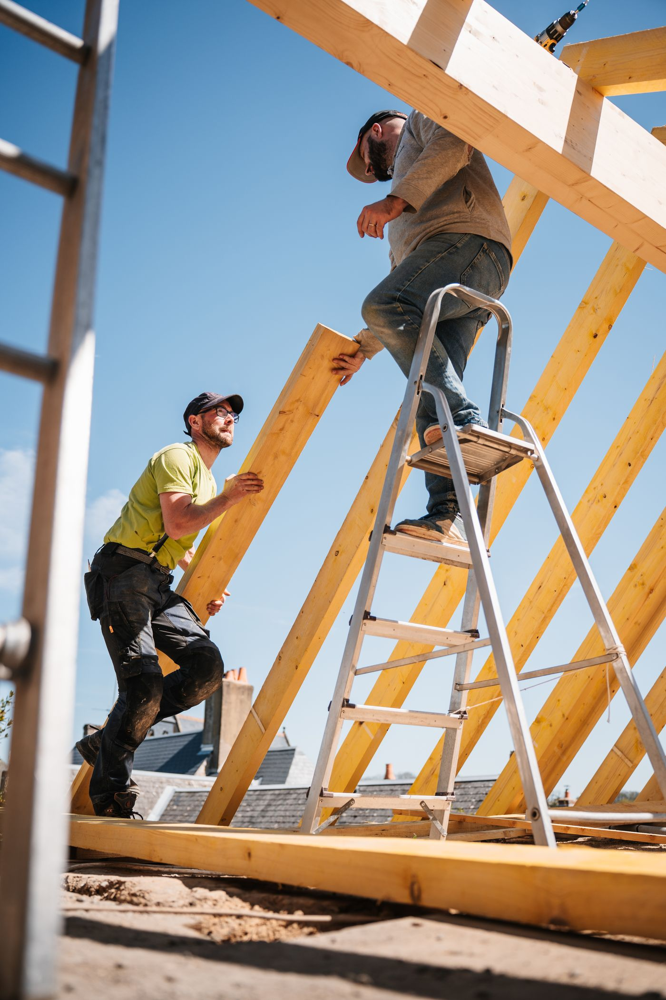
Marcin Papaj, Sidzina, powiat suski
Krokwie, belki, łaty, deski i elementy ciesielskie pod Państwa projekt. Wystarczy wysłać zapytanie przez stronę albo zadzwonić, a ja oddzwonię z wyceną.
Drewno konstrukcyjne i stolarka budowlana na konkretne zamówienie. Przy każdym wyrobie jest przycisk, który od razu otwiera formularz z wybranym rodzajem.

Komplet elementów więźby według projektu dachu: krokwie, płatwie, murłaty, słupy, kleszcze. Docięte na długość, gotowe do postawienia.
Zapytaj o więźbę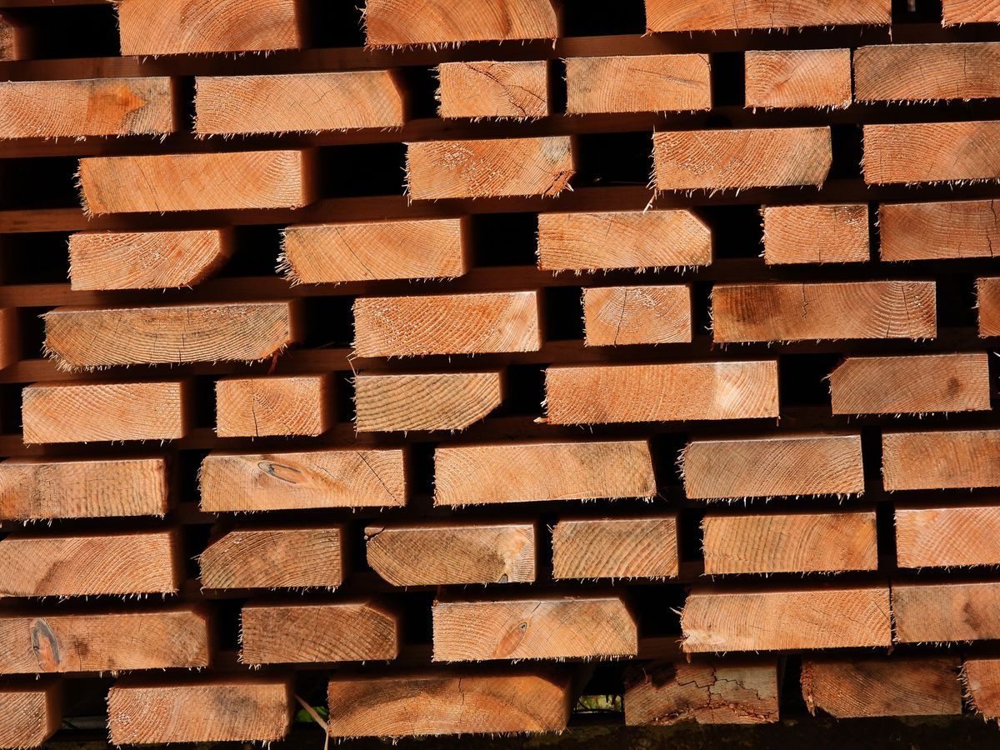
Belki, łaty, kontrłaty i kantówka w potrzebnych przekrojach i ilościach.
Zapytaj o tarcicę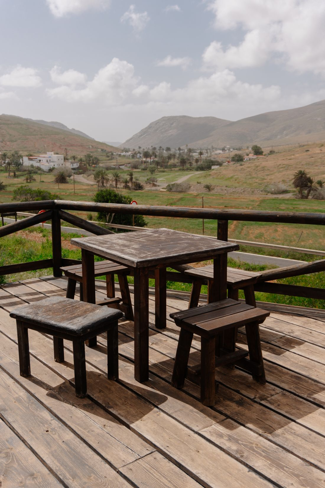
Deski heblowane i profilowane na podbitkę dachu, okładziny i tarasy.
Zapytaj o deski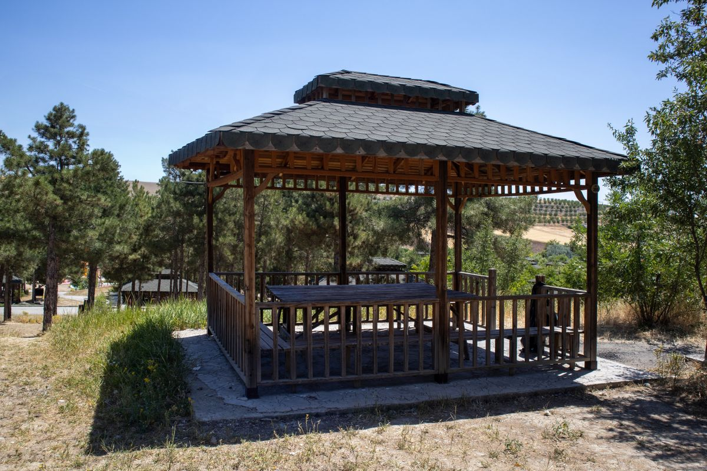
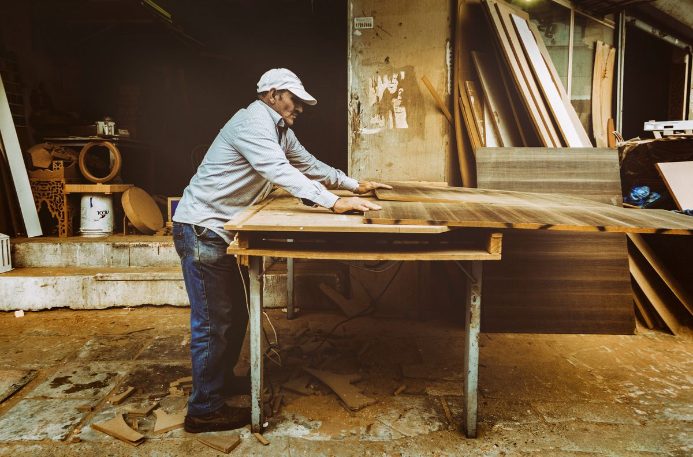
Schody, balustrady, ościeżnice i inne elementy z drewna według rysunku lub wzoru.
Zapytaj o wycenęWizualizacja robocza: zakres oferty i opisy uzupełnimy według tego, co Pan faktycznie wykonuje.
Bez wizyty w biurze i bez umawiania się na rozmowę na ślepo. Wystarczy kilka informacji o tym, co jest potrzebne.
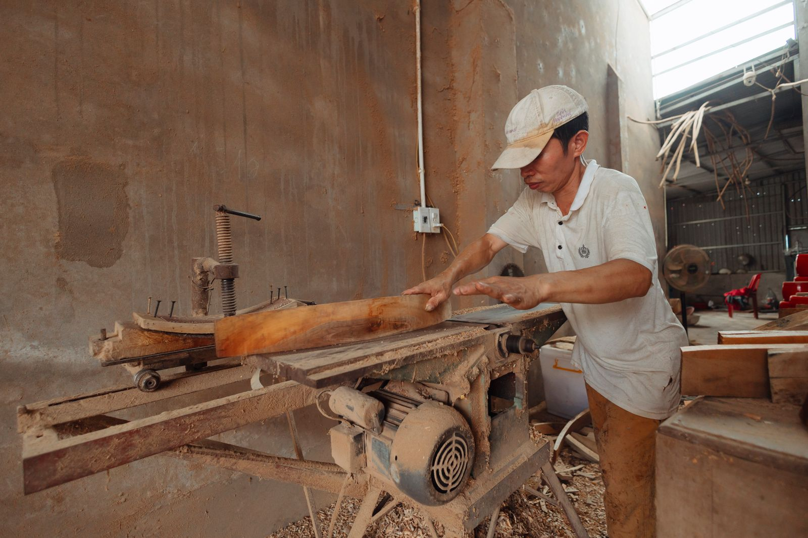
Tu znajdą się zdjęcia wykonanych więźb, konstrukcji i innych zleceń. W wizualizacji są zdjęcia poglądowe, do podmiany na Pana zdjęcia.
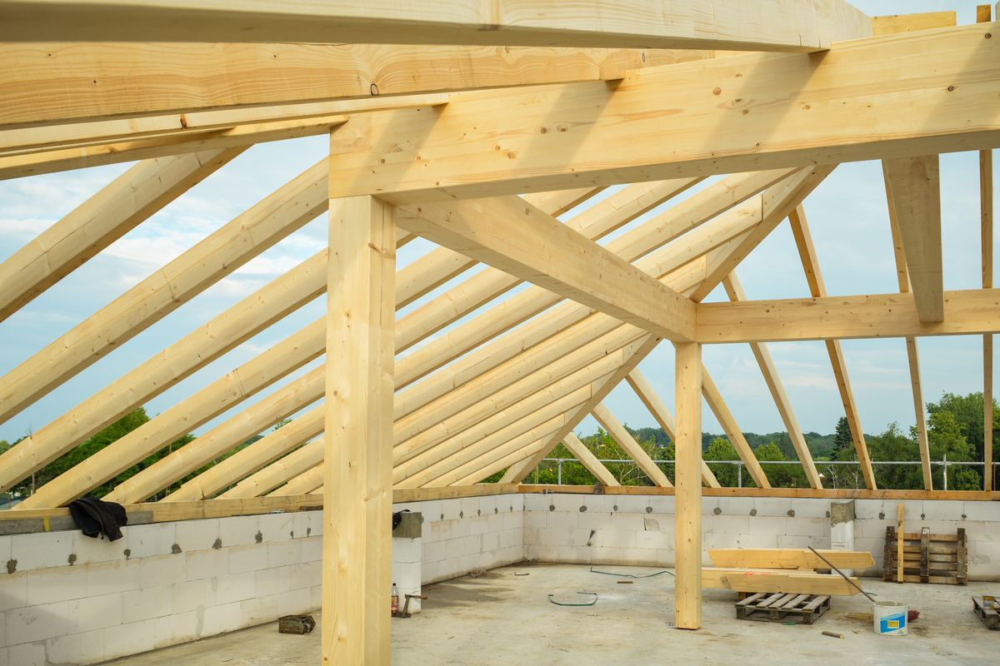
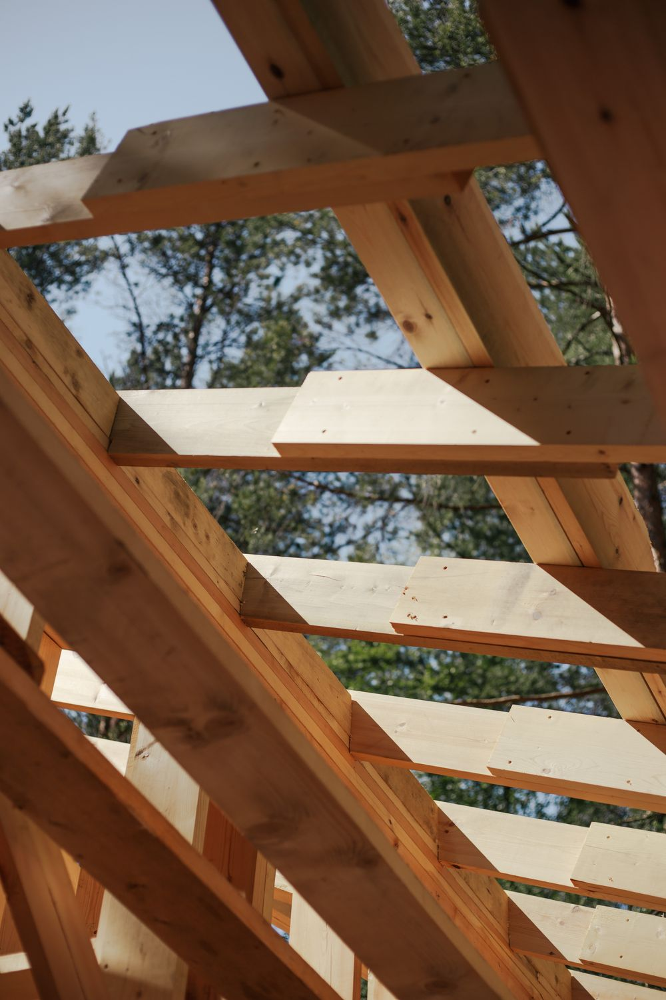
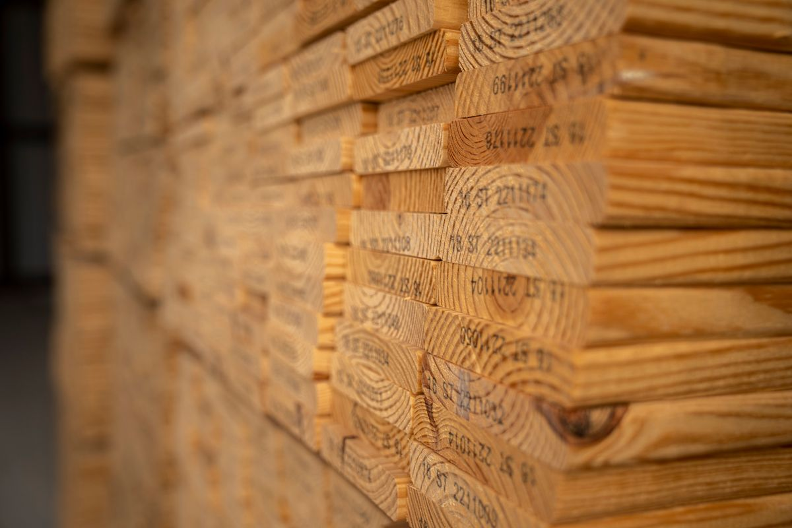
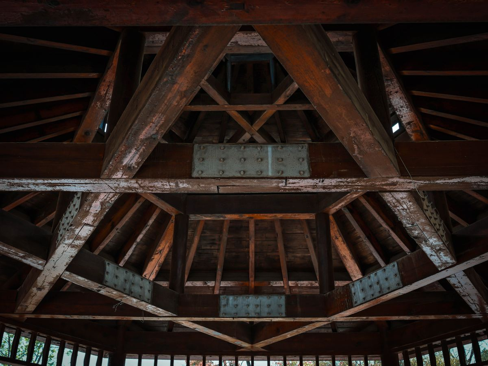
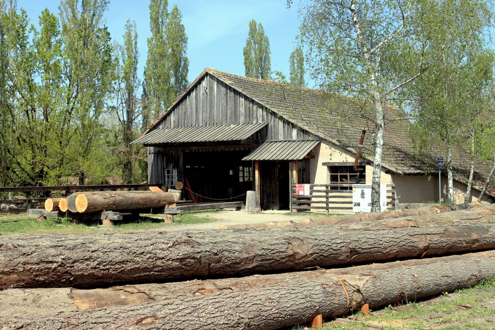
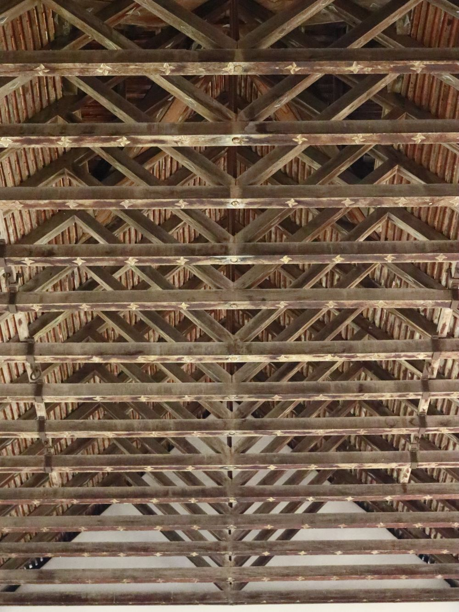
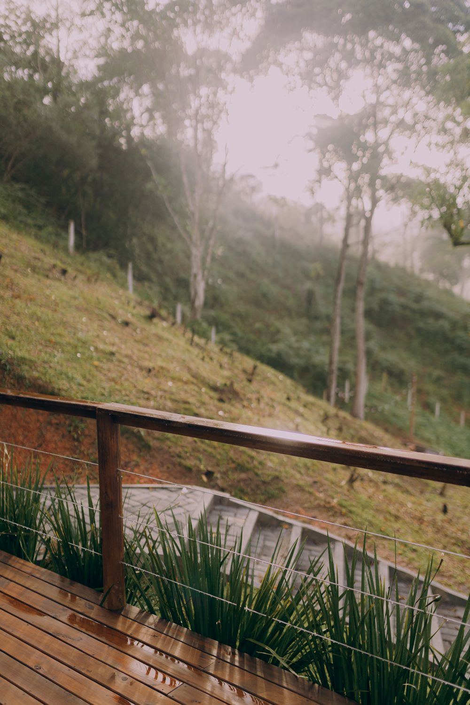
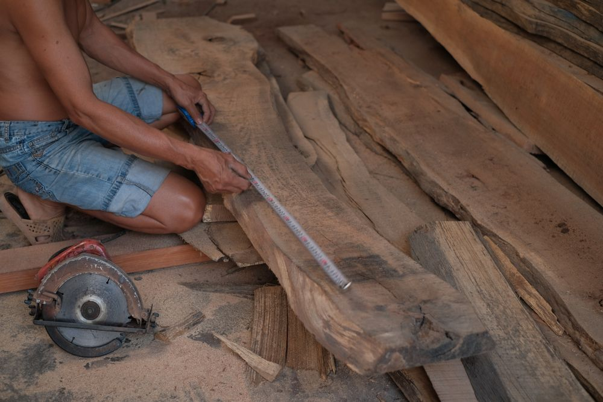
Firma działa w Sidzinie, w gminie Bystra-Sidzina w powiecie suskim, między Jordanowem a Babią Górą. Najczęściej obsługuję budowy w okolicy:
Bystra Podhalańska, Jordanów, Maków Podhalański, Sucha Beskidzka, Zawoja, Skawica, Spytkowice, Raba Wyżna, Rabka-Zdrój, Jabłonka i Nowy Targ.
Dalsze dowozy ustalamy indywidualnie przy wycenie.
Wypełnienie zajmuje około dwóch minut. Wystarczy rodzaj wyrobu i telefon, resztę można dopisać albo dołączyć jako zdjęcie.
Wygodniej zadzwonić? 505 859 710
To jest podgląd, więc formularz niczego nie wysłał. W gotowej stronie to zapytanie trafi od razu na Pana e-mail marcinx017@interia.pl, a na telefon 505 859 710 przyjdzie powiadomienie, że jest nowe zapytanie. Klient widzi potwierdzenie, że zgłoszenie doszło.
Nowe zapytanie ze strony papajdrew
Pan oddzwania na podany numer z wyceną, a zdjęcia i wymiary ma już w skrzynce.
Marcin Papaj PAPAJDREW
Sidzina, gmina Bystra-Sidzina
34-236 Sidzina, powiat suski
Najszybciej: telefon albo formularz zapytania. Na zapytania ze strony odpowiadam telefonicznie z wyceną.